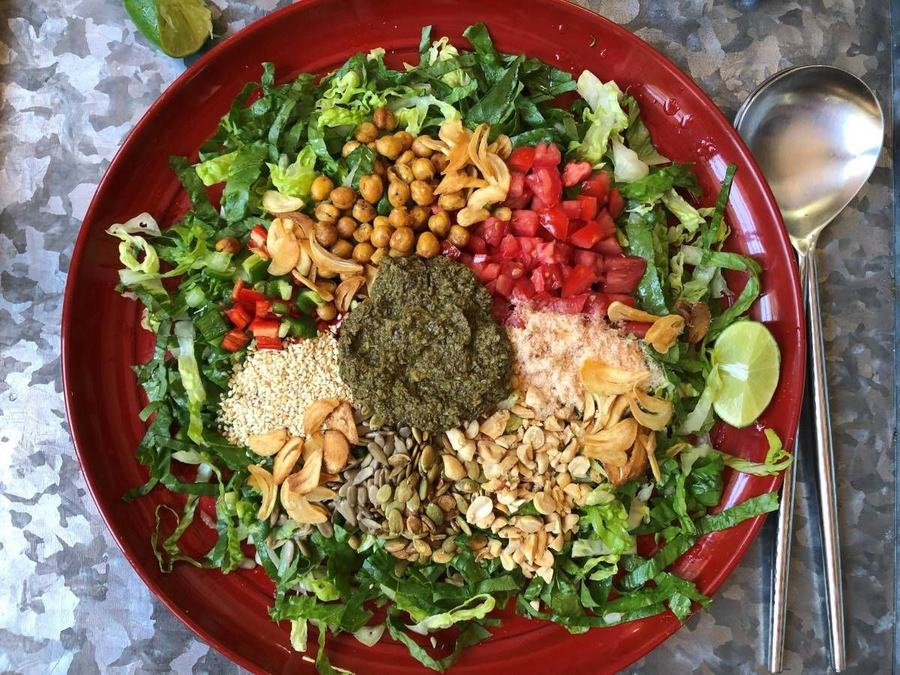
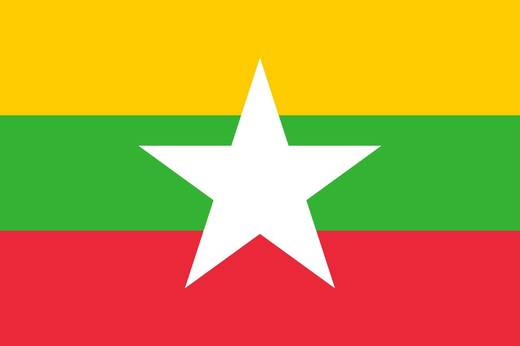
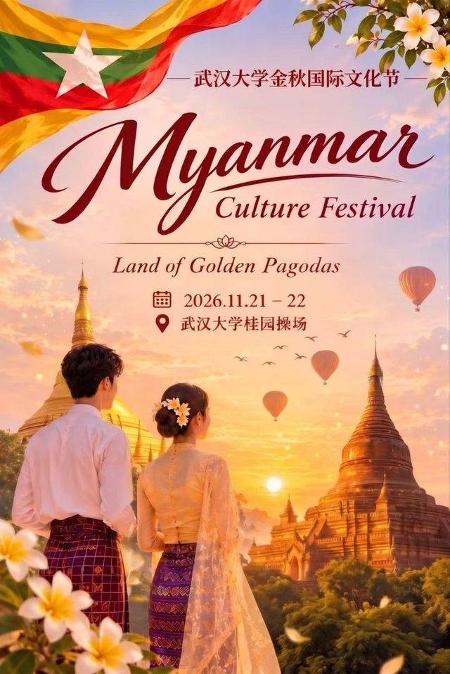
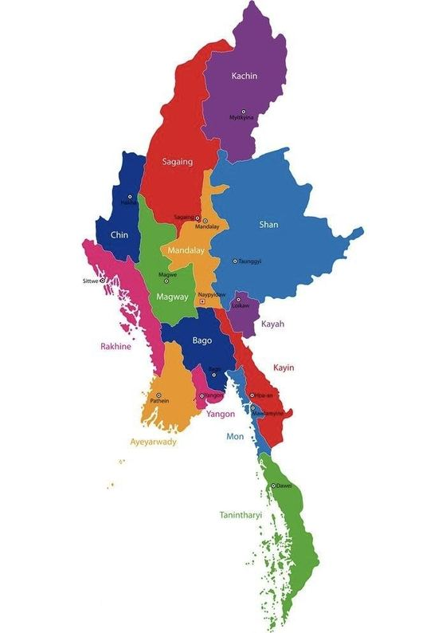

Tea Leaf Salad
လက်ဖက်သုပ် · Lahpet ThokeFermented tea leaves with crunchy beans, peanuts, sesame, fried garlic, tomato, chilli and lime, mixed together at the table.


This golden autumn, step into Myanmar at Guiyuan Playground. Taste tea leaf salad, sip Burmese milk tea, and meet the music, clothing and stories of the land of golden pagodas.
Hosted by Myanmar students together with the Wuhan University community.
Burmese flavours gather in one corner of the playground. Eat while you wander.
Tossed fresh at the counter. Choose your spice level.
Hot Burmese milk tea, sweet and rich.
Tap a name to see what each place is known for.
